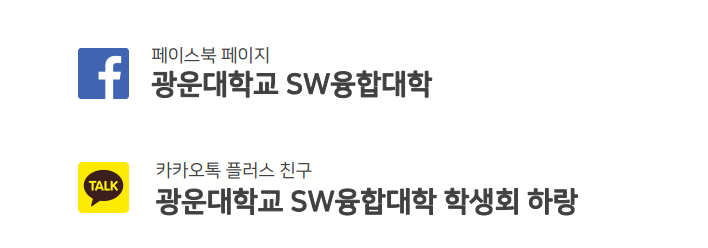
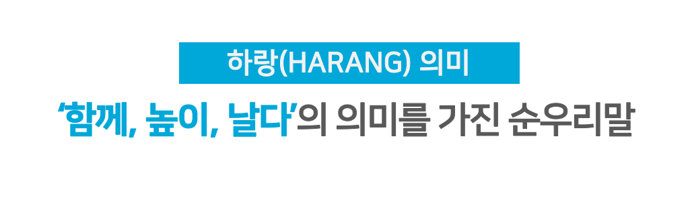
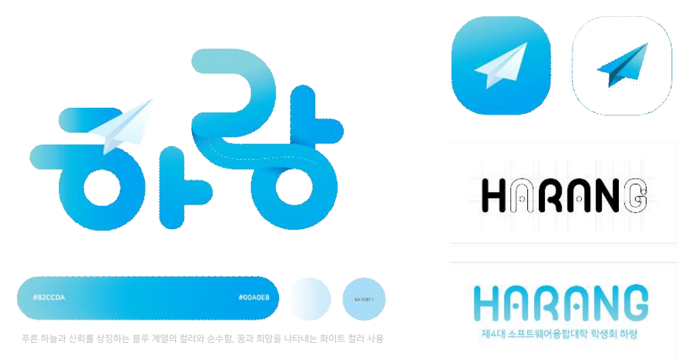
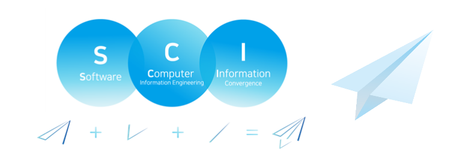
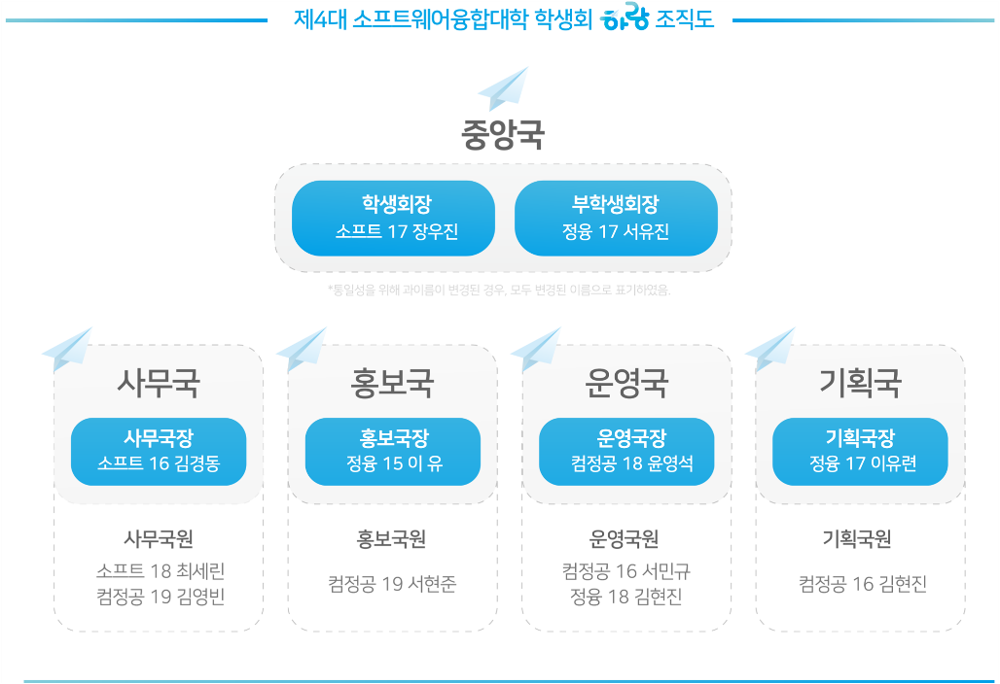

4. 단과대학 학생회
학생회 소개영상
소프트웨어융합대학 학생회와 어떻게 소통할 수 있나요?

소프트웨어융합대학 학생회에게 질문이 있다면 언제든지 페이스북 페이지 광운대학교 SW융합대학 또는 카카오톡 플러스친구 광운대학교 SW융합대학 학생회 하랑을 찾아주세요! 사소한 궁금증도 성심성의껏 답변해 드리겠습니다.
하랑이란?

'하랑'은 순우리말로 ‘함께 높이 날다’라는 의미를 가지고 있습니다.
소프트웨어융합대학을 학우 여러분과 함께 높이 날 수 있는 한 해를 만들고자 한 저희의 목표와 일치했기에, ‘하랑’의 의미를 마음속에 되새길 수 있도록 선정했습니다.
'더 높이 더 멀리!'라는 슬로건에 걸맞게 소프트웨어융합대학과 학우 여러분을 '함께 더 높이, 더 멀리' 날아갈 수 있도록 봉사하는 학생회가 되겠습니다.

‘하랑’의 의미에 맞춰 홍보국에서 제작한 제4대 소프트웨어융합대학 학생회 심볼 마크 및 로고입니다.
로고의 컬러는 신뢰를 상징하는 푸른 하늘을 떠오르게 하는 블루 계열의 컬러와
순수함, 꿈과 희망을 나타내는 화이트 컬러를 사용하여 하랑의 의미를 더했습니다.
학생회 심볼 소개

함께, 높이, 날다'의 의미를 가진 하랑을 나타내는 로고 종이비행기는 꿈과 희망을 상징하며 더 높이, 더 멀리 날아가겠다는 포부를 의미합니다.
또한, 소프트웨어 융합대학을 이루는 세 학부 각각의 앞 스펠링인 소프트웨어의 S, 컴퓨터정보공학의 C, 정보융합학부의 I와 하랑의 의미를 합쳐 이를 형상화 하였습니다.
학생회 조직도

제4대 소프트웨어융합대학 하랑은 중앙국, 사무국, 홍보국, 운영국, 기획국으로 이루어져 있습니다.
사무국 : 소프트웨어융합대학 행사에서 사용되는 비용에 대한 예/결산 수립 및 물품 관리
홍보국 : 소프트웨어융합대학의 정보 및 사업등과 관련한 컨텐츠 기획 및 홍보물 제작
운영국 : 소프트웨어융합대학의 운영에 필요한 기획, 내부 자료 관리
기획국 : 소프트웨어융합대학의 각종 행사 총괄 및 기획